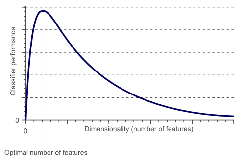
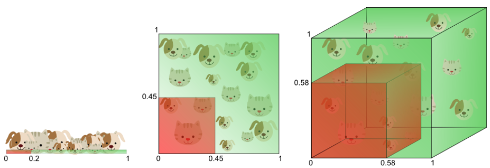

降维技术简介
- 降维的本质
- 维度灾难
- 降维的好处
思考
降维的本质
- 寻找可解释数据的信息最小集
- 奥卡姆剃刀：关注主要问题
维度灾难
- 考虑一个近邻问题，输入数据是在$p$维度上均匀分布
- 假设我们需要寻找某一目标点的所有近邻，占所有数据的比例为$r$
- 在每个维度上的期望边长为$E_p(r)=r^{1/p}$
- $E_{10}(0.01)=0.63,\ E_{10}(0.1)=0.8$
- 如果取1%或10%的数据做一个“本地”平均的化，需要覆盖63%或80%的数据范围
- 大幅度降低$r$也不能很好的缓解这个问题

Hughes Phenomenon

Story about The curse of dimensionality
想象我们需要建立一个分辨猫和狗的图片分类器
把特征增加到3维
分析

- 1D case: sample density was 10/5=2 samples/interval
- 2D case: sample density was 10/25 = 0.4 samples/interval
- 3D case: sample density was 10/125 = 0.08 samples/interval
Get sparser and sparser
Overfitting and Bestfitting

Simple classifier generalizes much better to unseen data because it did not learn specific exceptions that were only in our training data by coincidence
By using less features, the curse of dimensionality was avoided such that the classifier did not overfit the training data
More explaination
If we keep adding dimensions, the amount of training data needs to grow exponentially fast to maintain the same coverage and to avoid overfitting
Deep further

Training samples that fall outside the unit circle are in the corners of the feature space and are more difficult to classify than samples near the center of the feature space.
How the volume of the circle (hypersphere) changes relative to the volume of the square (hypercube) when we increase the dimensionality of the feature space.
$$V(d)=\frac{\pi^{d/2}}{\Gamma(\frac{d}{2}+1)}0.5^d$$
With $radius=0.5$
The volume of the hypersphere tends to zero as the dimensionality tends to infinity

For an 8-dimensional hypercube, about 98% of the data is concentrated in its 256 corners.
The ratio of the difference in minimum and maximum Euclidean distance from sample point to the centroid, and the minimum distance itself, tends to zero: $$\lim_{n\to\infty}\frac{dist_{max}-dist_{min}}{dist_{min}}\to 0$$
降维的好处
- 信息压缩
- 简化问题
- 提高信息抽取效率